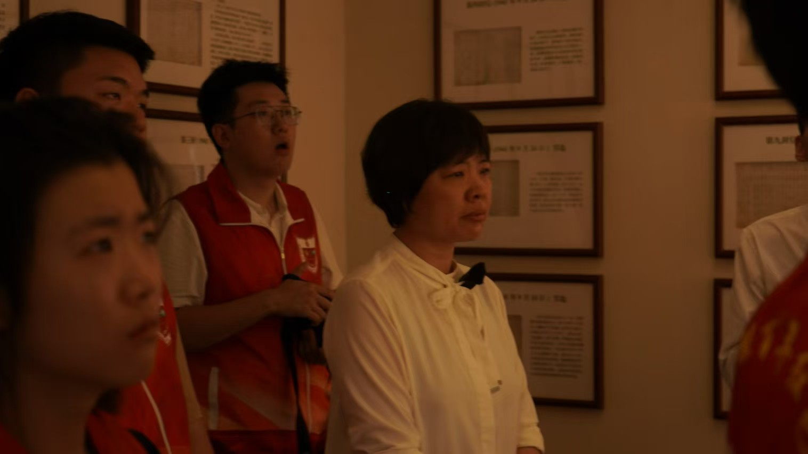
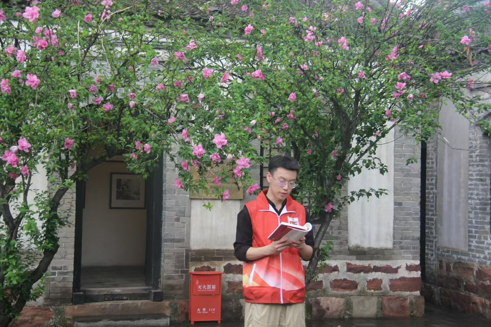

中北大学“数智赋能百年红色家书”暑期社会实践团成员在指导教师杜瑞平的带领下，来到了麻田八路军总部纪念馆。“潺潺清漳河、巍巍太行山、悠悠中华魂”，这里是太行精神的重要发源地，彰显着忠诚与光荣，铭刻着伟大的抗战精神，激励无数中华儿女在新征程上取得更加伟大的胜利。
抵达目的地，实践团成员们首先被麻田八路军司令部旧址的庄严肃穆所感染。这里，每一砖每一瓦都仿佛在诉说着那段不平凡的历史。团队成员们跟随讲解员的步伐，穿梭于各个院落之间，仔细聆听每一段历史的讲述，观察每一件珍贵的文物。从机要科到宿办室，从武器装备到红色家书，每一个细节都让成员们对八路军在艰苦条件下坚持抗战的英勇与智慧有了更加深刻的了解。
在左权宿办室外，牛恒志同学向游客朋友们解读左权将军的绝笔信。在那个烽火连天的岁月里，左权将军不仅是战场上的英勇指挥者，更是家中妻女心中的温暖依靠。当生死悬于一线，他提笔留下的不仅是一封信，更是对革命事业的无限忠诚与对家人深深的爱恋。“志兰！亲爱的：别时容易见时难，分离二十一个月了，何日相聚？念、念、念、念！愿在党的整顿之风下各自努力，力求进步吧！以进步来安慰自己，以进步来酬报别后衷情。不多谈了，祝你好！”
云卓然同学坐在左权将军曾在此休憩过的石凳上，展开书页缓缓诵读道：“叔父！我虽一时不能回家，我牺牲了我的一切幸福为我的事业来奋斗，请你相信这一道路是光明的、伟大的，愿以我的成功的事业报你与我母亲对我的恩爱，报我林哥对我的培养。”彼时的左权将军通过叔父的来信得知了大哥左育林去世的消息，然而自己还要奔赴抗战前线，忠孝实难两全。左权内心深处撕扯着、煎熬着，但同时清醒着、坚定着。他恳请叔父相信“这一道路是光明的、伟大的”，他愿以“成功的事业”，报叔父与母亲对自己的恩情，报大哥对自己的培养。云卓然同学的讲解，让这封家书不仅仅是历史的见证，更成为了连接过去与现在的桥梁。它让我们看到，在民族危亡之际，有多少像左权将军这样的英雄儿女，用自己的血肉之躯筑起了钢铁长城，守护着这片土地与人民。
吴荣嵘同学深情讲解了左权将军写给自己年迈母亲的一封家书。“母亲∶亡国奴的确不好当……我全军将士，都有一个决心，为了民族国家的利益，过去没有一个铜板，现在仍然是没有一个铜板，准备将来也不要一个铜板，过去吃过草，准备还吃草。母亲！你好吗，家里的人都好吗？我时刻记念着！” 她解释道：“左权将军作为八路军的高级将领，他的家书不仅仅是对家人的思念，更体现了他对国家和人民深沉的爱。在那个战火纷飞的年代，左权将军和无数革命先辈一样，将个人的生死置之度外，为了民族的解放事业奋斗不息。”
“我们此次的‘数智赋能百年红色家书’暑期社会实践活动，就是要利用现代科技手段，将这样的红色家书数智化，让那段历史跨越时空，触动更多人的心灵。”吴荣嵘同学坚定地说，“左权将军的家书，不仅是一封信，更是一段历史，一种精神。通过我们的努力，让这样舍小家为大家的精神被更多人知晓，让红色精神在新时代得到传承和弘扬，是我们作为新时代青年的责任与使命。”
杜瑞平老师带领实践团成员们重温了陈毅元帅创作的《过太行山书怀》。这首诗不仅是八路军将士们在抗日战争中英勇斗争的真实写照，也是将士们对祖国、对人民深沉情感的抒发。站在巍峨的太行山脉下，杜老师深情地解读了这首《过太行山书怀》。“黄河东走汇百川，自来表里太行山。万年民旅发祥地，抗战精华又此间。”杜老师指出，“数智赋能百年红色家书”这一社会实践项目，不仅仅是对于红色家书的数字化展示，更是对红色文化中蕴含的革命精神的深刻挖掘。《过太行山书怀》这样的革命诗歌，与红色家书一样，都是历史的见证，是革命者情感与信念的直接表达。通过此次暑期社会实践，同学们不仅要让这些珍贵的历史记忆得到传承，更要让其中蕴含的红色精神成为激励一代又一代中华儿女前行的力量。
在新时代的背景下，传承红色精神，不仅是对历史的尊重，更是对未来的承诺。参观结束后，实践团成员们纷纷表示，将铭记历史，勇担时代使命，让红色精神在自己心中生根发芽，为实现中华民族伟大复兴的中国梦贡献青春力量。
红色家书载忠魂 纸短情长激担当
2024年08月21日
